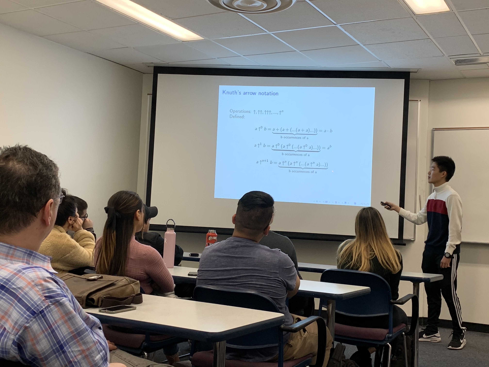
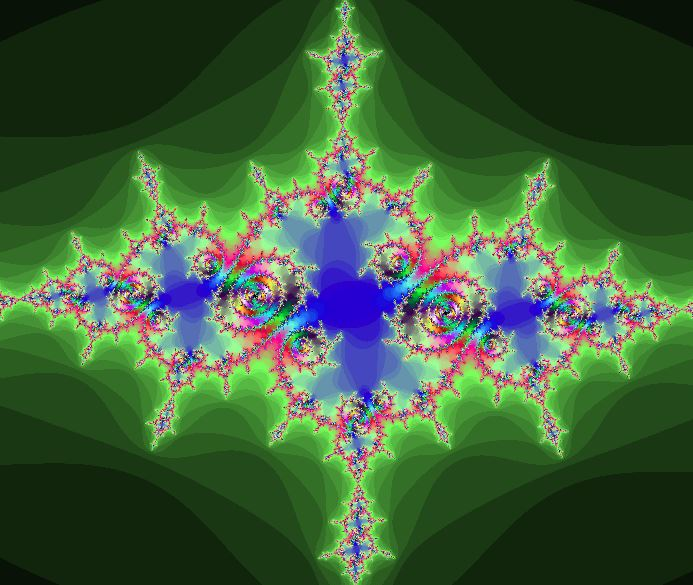

Personally, I am very interested in research, since the idea of exploring the unknown is something I find very fascinating. Also, research is an incremental process spanning several millennia, so being a researcher connects you to a long history of human progress. Research is the process of expanding the domain of knowledge of the human species, which is what fundamentally drives progress in society.
While watching a video “The Enormous TREE(3)” from the Numberphile series, I was fascinated by how fast the “tree sequence” can grow. This sequence is not well-understood though, so I decided to investigate the problem by creating a novel sequence of tuples.
I studied the maximum length of such a sequence and it turns out the sequence grows very fast. It is remarkable to see how the results can be expressed using Knuth’s up-arrow notation and the recursive Ackermann function, and that it is associated with Eulerian numbers.
It was a difficult process learning how to structure proofs from scratch into publication, but overall I thought it was a rewarding process. You can find my paper here: https://www.tandfonline.com/doi/abs/10.1080/07468342.2020.1680227
This is me giving a talk about my paper at a graduate program at Cal State Fullerton:
Any mathematician loves fractals. They’re a perfect symbol for the beauty of mathematics. It’s a way to derive complexity from simplicity, and it represents a deep connection between nature and mathematics. One of the first things I wanted to do when I started to code was to create the Mandelbrot Set, a mathematical fractal known for its immense variety of complex patterns. I first tried writing code in Python Turtle, but it took hours to render a single image. I tried using Pygame, which was significantly faster, taking a few seconds to render an image. What settled it all, though, was the Javascript GPU, which was able to render the Mandelbrot set at 60 frames per second. This dramatic improvement in rendering speed encouraged me to make a variety of other fractals such as Julia Sets and 3D fractals.
When I heard of the Breakthrough Junior Challenge, I decided to make a fun video explaining fractals to a general audience. The video was limited to three minutes, which was sad since I could literally go on hours about these topics. Still, it was a cool opportunity to share these ideas with a broader community.
Watch my video here: https://www.youtube.com/watch?v=p55DiT4cqlo
Also, explore the Mandelbrot Set for yourself by visiting the "Mandelbrot Zoom" tab on this website. Visit the "3D renders" tab to explore some 3D fractals.
